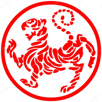
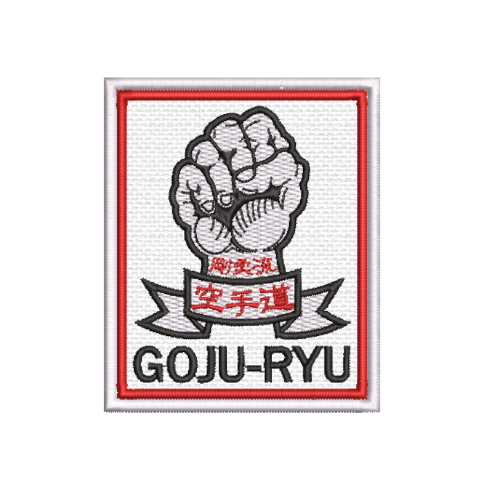
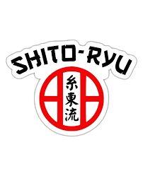

Shotokan
O Shotokan é um dos estilos mais praticados do karatê no mundo, desenvolvido a partir dos ensinamentos de Gichin Funakoshi. Ele se caracteriza por movimentos fortes, lineares e bem definidos, com foco em potência e precisão. Seus golpes costumam ser executados em posições amplas e estáveis, priorizando eficiência em combate e disciplina técnica.
Além do aspecto físico, o Shotokan valoriza profundamente a formação do caráter. Seus treinos incluem katas tradicionais e exercícios rigorosos que desenvolvem controle, respeito e autocontrole. Por isso, é muito comum em academias e competições esportivas internacionais.

Goju-Ryu
O Goju-Ryu combina técnicas duras e suaves, como indica seu nome (“go” = duro, “ju” = suave). Criado por Chojun Miyagi em Okinawa, esse estilo mistura golpes fortes com técnicas de respiração controlada e movimentos circulares mais fluidos.
Esse equilíbrio torna o Goju-Ryu um estilo muito completo, trabalhando tanto a força quanto a resistência e o controle interno do corpo. O treinamento inclui exercícios de respiração, condicionamento físico e katas que simulam combate em curta distância.

Shito-Ryu
O Shito-Ryu é um dos estilos mais técnicos do karatê, criado por Kenwa Mabuni. Ele reúne influências de diferentes escolas antigas de Okinawa, o que faz dele um dos estilos com maior variedade de katas.
Seu foco está na velocidade, precisão e adaptação, permitindo que o praticante desenvolva tanto técnicas rápidas quanto movimentos mais tradicionais e complexos. Por essa diversidade, o Shito-Ryu é muito usado em competições e também no estudo aprofundado das formas clássicas do karatê.